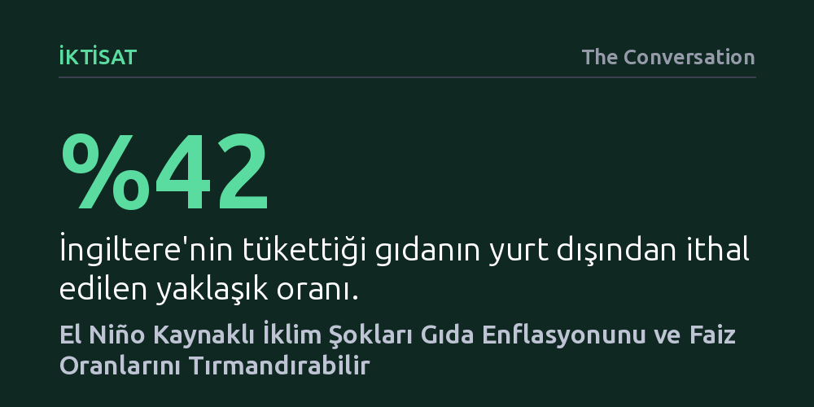

IKTISAT · The Conversation · 2026-10-24
Tarihin en güçlü El Niño dalgası, tarımsal üretimi ve tedarik zincirlerini vurarak gıda enflasyonunu tırmandırabilir. Bu durum merkez bankalarının faiz artırmasına yol açarak market harcamalarından konut kredilerine kadar tüm tüketici maliyetlerini doğrudan yükseltme riski taşıyor.
Aşırı hava olaylarının yalnızca çevresel bir felaket değil, doğrudan mutfak masraflarını ve kredi faizlerini belirleyen kritik bir para politikası riski olduğunu gösteriyor.

İngiltere hükümetinin El Niño kaynaklı kuraklık, taşkın ve gıda kıtlığı tehlikesiyle karşı karşıya kalan Malavi, Kenya ve Zambiya gibi ülkelere 15 milyon sterlinlik destek fonu ayırması ilk bakışta klasik bir insani yardım adımı gibi görünebilir. Oysa meselenin boyutu uluslararası yardımların çok ötesine geçiyor. Pasifik Okyanusu'ndaki atmosferik ve okyanusal dalgalanmaların İngiltere'deki market raflarına ve hatta konut kredisi (mortgage) faizlerine kadar uzanan somut ekonomik yansımaları bulunuyor.
Tarihin en güçlülerinden biri olarak kaydedilen ve yılın ilerleyen aylarında zirveye ulaşması beklenen bu yılki El Niño döngüsü, küresel ekonomiyi sarsma potansiyeli taşıyor. Büyük tarım üreticilerini veya uluslararası taşımacılık rotalarını vuran aşırı kuraklık ve sel felaketleri, hasat kayıplarına yol açarak küresel tarım emtiası fiyatlarını yukarı tırmandırıyor. Böylece Pasifik'te başlayan bir hava anomalisi, küresel ölçekte bir tedarik ve maliyet krizine zemin hazırlıyor.
Tükettiği gıdanın yaklaşık yüzde 42'sini yurt dışından ithal eden İngiltere gibi ülkeler, iklim kaynaklı tedarik kesintilerine karşı oldukça hassas bir konumda yer alıyor. Hasat kayıpları tarımsal ham madde fiyatlarını artırırken, buna paralel seyreden yüksek enerji maliyetleri de gübre, işleme ve lojistik giderlerini eş zamanlı olarak yukarı çekiyor.
Bununla birlikte, uluslararası piyasalardaki bir fiyat sıçraması ertesi gün market etiketine doğrudan yansımıyor. Gıda üreticileri ve perakendeciler, ani fiyat dalgalanmalarına karşı vadeli sözleşmeler ve finansal risk yönetimi teknikleri kullanarak tüketicileri ilk şoklardan bir süre koruyabiliyor. İngiltere Merkez Bankası da El Niño'nun etkilerinin ani bir gıda kıtlığından ziyade, özellikle 2027 yılına doğru zamana yayılan kademeli bir gıda enflasyonu baskısı şeklinde ortaya çıkacağını öngörüyor.
İspanya Merkez Bankası'nın araştırmaları, El Niño'nun etkilerinin tarım ürününün türüne, zamana ve uygulanan tarım politikalarına göre büyük farklılıklar gösterdiğini ortaya koyuyor. Çiftçilerin ekim kararlarını değiştirmesi, şirketlerin alternatif tedarikçilere yönelmesi ve kamu müdahaleleri çoğu zaman yıkıcı gıda krizlerinin önüne geçebiliyor. Asıl kritik risk ise birden fazla küresel şokun aynı anda yaşanması durumunda beliriyor.
Şiddetli bir El Niño döneminde enerji piyasalarında yeni bir türbülansın baş göstermesi ya da aşırı hava olaylarının deniz taşımacılığı rotalarını felce uğratması, ithalat fiyatları üzerindeki baskıyı katbekat büyütebilir. İşte bu aşamada bir iklim olayı, doğrudan merkez bankalarının para politikası gündemine yerleşiyor. İngiltere Merkez Bankası Para Politikası Kurulu, gıda ve enerji kaynaklı enflasyonist baskıları dizginlemek için faiz artışına gitmek zorunda kalabileceğini değerlendiriyor; bu da Pasifik'teki bir hava hareketinin konut kredisi ödeyen tüketicinin cebini doğrudan vurması anlamına geliyor.
İngiltere hükümetinin duyurduğu 15 milyon sterlinlik fon, kriz yönetimi anlayışında köklü bir paradigma değişimine işaret ediyor. "Öngörücü eylem" (anticipatory action) olarak adlandırılan bu yaklaşım, afet oluştuktan sonra hasarı onarmak yerine, bilimsel tahminler ışığında kriz kapıyı çalmadan önce kaynak tahsis etmeyi amaçlıyor. Veriler insani krizlerin yaklaşık yüzde 35'inin önceden tahmin edilebildiğini gösterirken, küresel insani yardım fonlarının henüz yüzde 1'inden azı bu erken önlemlere ayrılıyor.
Hava ve iklim tahminleri artık yalnızca meteorologların veya balıkçıların başvurduğu teknik raporlar olmaktan çıktı; doğrudan finansal değer taşıyan kritik ekonomik göstergelere dönüştü. İthalatçıların kur ve emtia stratejilerini iklim risklerine göre güncellemesi, bankaların kredi analizlerine iklim kaynaklı arz şoklarını dahil etmesi ve şirketlerin tedarik zincirlerini stres testlerine tabi tutması gerekiyor. Önceden kestirilebilen iklim verilerini finansal kararlara entegre etmek, modern ekonomik dayanıklılığın vazgeçilmez bir unsuru haline geliyor.